Central Electronics Box: Service and Repair
12 90 ... - Removing and installing/replacing electronics box

Important!
Read and comply with notes on protection against electrostatic damage (ESD protection) 61 35 ... Notes on ESD Protection (Electro Static Discharge).
Note:
Follow instructions for removing and installing electronic control units Service and Repair

Necessary preliminary tasks:
- Read fault memory.
- Disconnect negative battery cable
- Remove microfilter housing 64 31 092 Removing and Installing/Replacing Microfilter Housing (Lower Section)
- Remove tension strut on spring strut dome Service and Repair on right
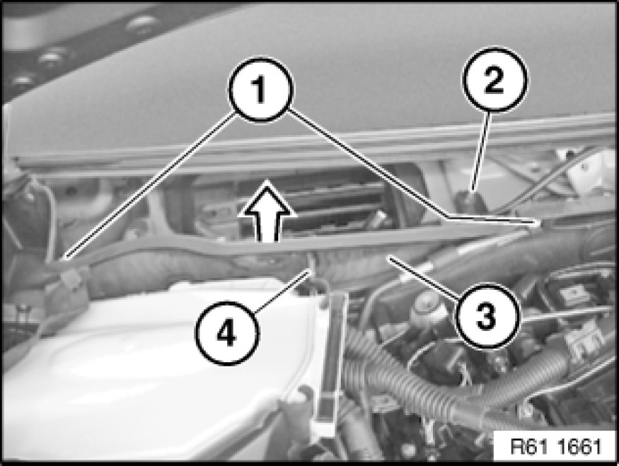
Release screws (1).
Slacken nut (2).
Lift out right heater end plate (3).
Installation Note:
Ensure gasket (4) is correctly seated.
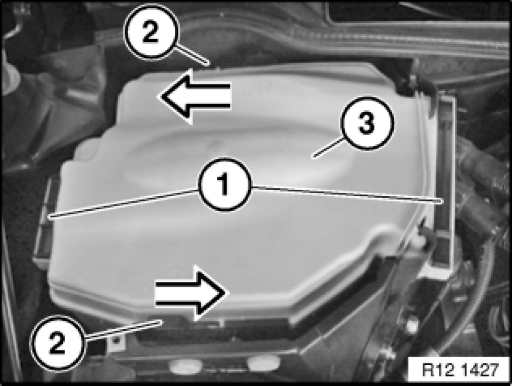
Unlock fasteners (1) from below and slide upwards approx. 10 mm.
Unlock locks (2) in direction of arrow.
Remove cover (3).
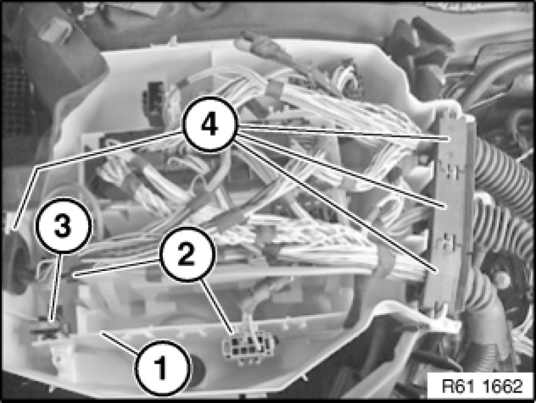
Lift out plug connection (2), fuse carrier (3) and wiring harness grommet (4) from electronics box (1).
Installation Note:
Make sure wiring harness grommets (4) are correctly seated in electronics box (1).
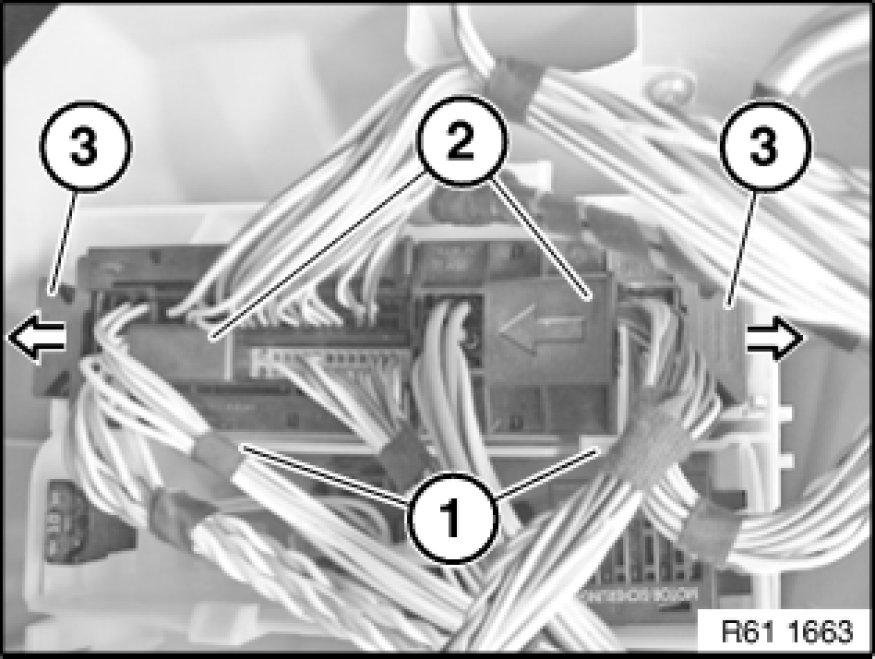
Unlock DME control unit at holders (1) and raise slightly.
Pull tab (3) in direction of arrow out of housing and disconnect plug connections (2) on DME control unit.
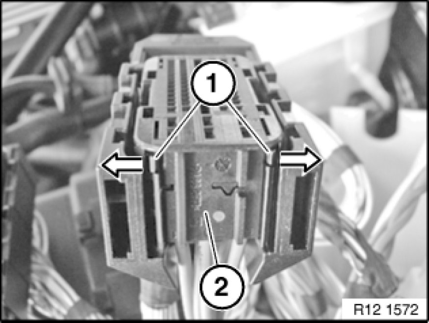
If necessary, press locking tabs (1) in direction of arrow and pull contact carrier (2) out of housing.
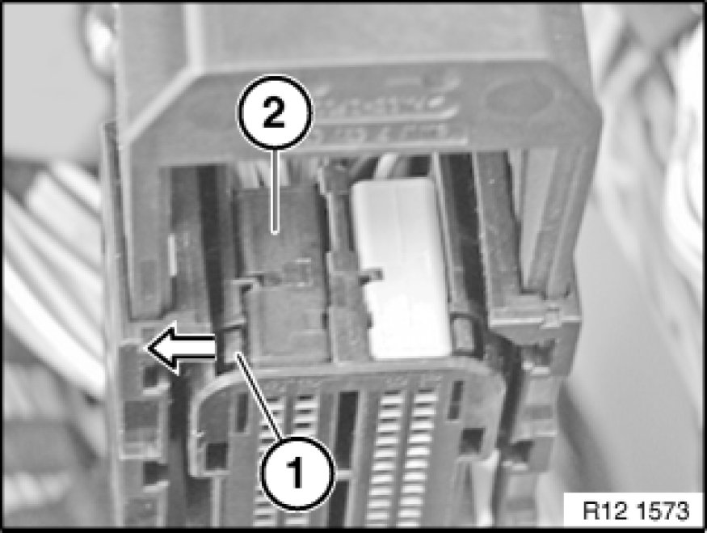
If necessary, press locking tab (1) in direction of arrow and pull contact carrier (2) out of housing.
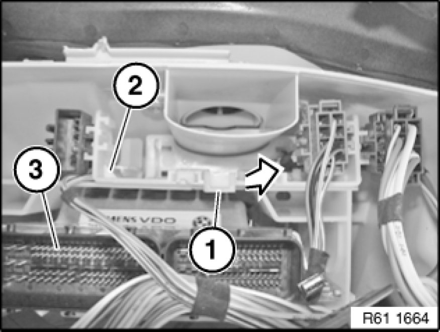
Unlock device holder (2) at holder (1) and remove.
Remove DME control unit (3).
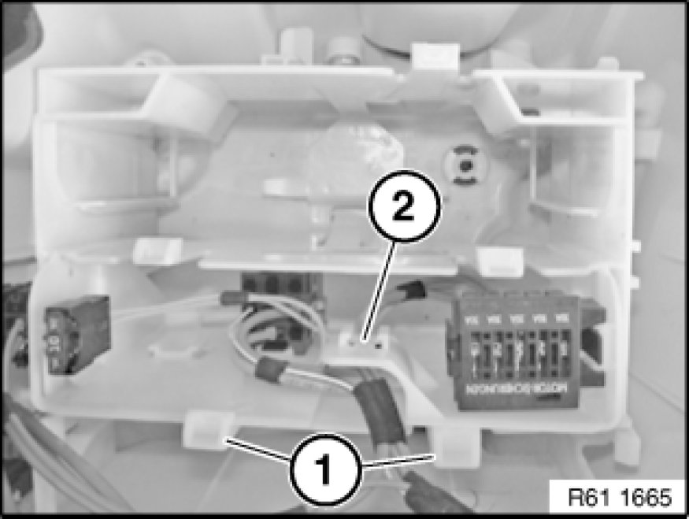
Unlock device holder (2) at holder (1) and remove.
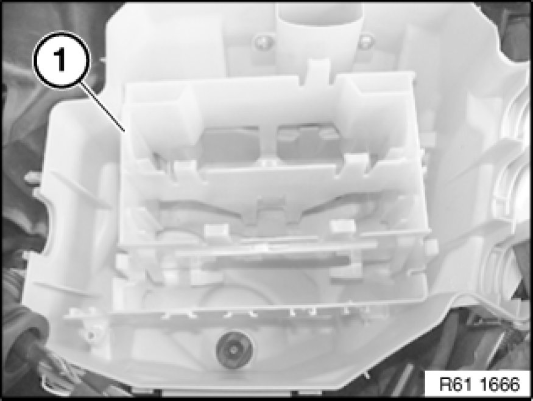
Remove device holder (1) from electronics box.
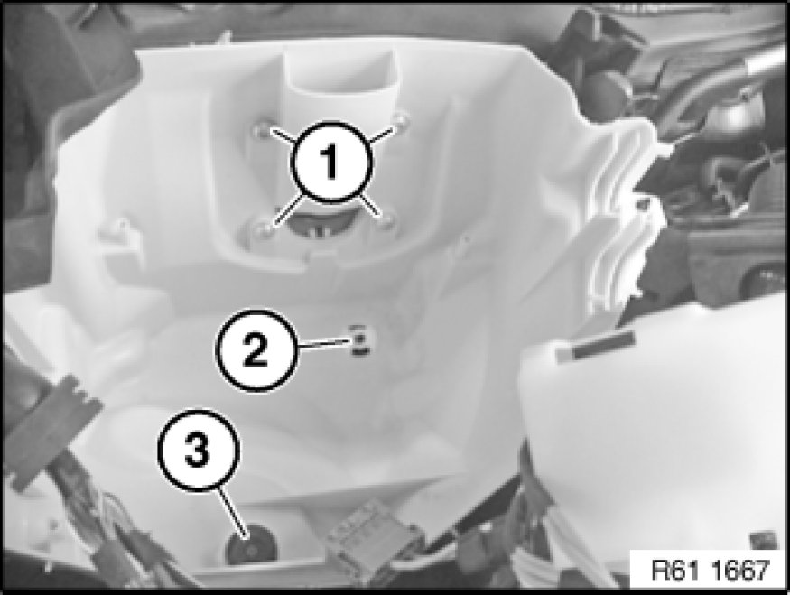
Release screws (1).
Replacement:
Modify water drain valve (2) and bump stop (3).
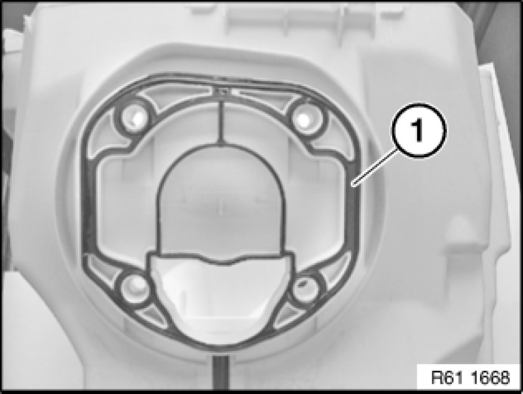
Installation Note:
Make sure gasket (1) is correctly seated on electronics box.